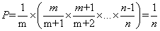
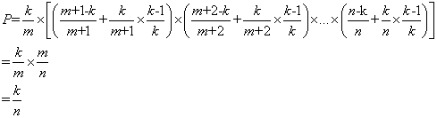

蓄水池抽样算法
1 蓄水池抽样问题
如果我们知道 n 的值，那么问题就可以简单的用一个大随机数 rand()%n 得到一个确切的随机位置，那么该位置的对象就是所求的对象，选中的概率是 1/n。
但现在我们并不知道 n 的值，这个问题便抽象为蓄水池抽样问题，即从一个包含 n 个对象的列表 S 中随机选取 k 个对象，n 为一个非常大或者不知道的值。通常情况下，n 是一个非常大的值，大到无法一次性把所有列表 S 中的对象都放到内存中。
2 n 个样本随机抽取 1 个（n 未知）
我们这个问题是蓄水池抽样问题的一个特例，即 k=1。
解法：我们总是选择第一个对象，以 1/2 的概率选择第二个，以 1/3 的概率选择第三个，以此类推，以 1/m 的概率选择第 m 个对象。当该过程结束时，每一个对象具有相同的选中概率，即 1/n，证明如下。
证明：第 m 个对象最终被选中的概率 P = 选择 m 的概率 * 其后面所有对象不被选择的概率，即

#include <iostream> #include <cstdlib> #include <ctime> #include <vector> using namespace std; typedef vector<int> IntVec; typedef typename IntVec::iterator Iter; typedef typename IntVec::const_iterator Const_Iter; // 生成一个随机数，范围为 [i, k] int randint(int i, int k) { if (i > k) { int t = i; i = k; k = t; // swap } int ret = i + rand() % (k - i + 1); return ret; } /* @input：未知大小的样本 * @result：容量为 1 的蓄水池，即抽取 1 个样本 */ bool reservoir_sampling(const IntVec &input, int &result) { srand(time(NULL)); if (input.size() <= 0) return false; Const_Iter iter = input.begin(); result = *iter++; for (int i = 1; iter != input.end(); ++iter, ++i) { int j = randint(0, i); if (j < 1) result = *iter; } return true; } int main() { const int n = 10; IntVec input(n); int result = 0; for (int i = 0; i != n; ++i) input[i] = i; if (reservoir_sampling(input, result)) cout << result << endl; return 0; }
3 n 个样本随机抽取 m 个不同样本（n 未知）
对应蓄水池抽样问题，可以类似的思路解决。先把读到的前k个对象放入“水库”，对于第 k+1 个对象开始，以 k/(k+1) 的概率选择该对象，以 k/(k+2) 的概率选择第 k+2 个对象，以此类推，以 k/m 的概率选择第 m 个对象（m>k）。如果 m 被选中，则随机替换水库中的一个对象。最终每个对象被选中的概率均为 k/n，证明如下。
证明：第 m 个对象被选中的概率 = 选择 m 的概率*（其后元素不被选择的概率+其后元素被选择的概率*不替换第m个对象的概率），即

/* 蓄水池抽样 * 从未知大小的 n 样本中选择 m 个样本 */ #include <iostream> #include <cstdlib> #include <ctime> #include <vector> using namespace std; typedef vector<int> IntVec; typedef typename IntVec::iterator Iter; typedef typename IntVec::const_iterator Const_Iter; // 生成一个随机数，范围为 [i, k] int randint(int i, int k) { if (i > k) { int t = i; i = k; k = t; // swap } int ret = i + rand() % (k - i + 1); return ret; } /* @input: 未知大小的样本 * @result：蓄水池 * @m：蓄水池大小 */ bool reservoir_sampling(const IntVec &input, IntVec &result, int m) { srand(time(NULL)); if (input.size() < m) return false; result.resize(m); Const_Iter iter = input.begin(); for (int i = 0; i != m; ++i) // 蓄水池中最初包含前 m 个样本 result[i] = *iter++; // 不断更新蓄水池 result 中的样本 for (int i = m; iter != input.end(); ++i, ++iter) {// 某一次执行逻辑：在下标为 0-i（i>=m)的样本中得到一个随机下标 j， // 如果蓄水池 result 中有下标 j 就把当前样本 *iter 加入到 result[j] 中 int j = randint(0, i); if (j < m) // 如果第 i 个样本被随机到，即：m/i result[j] = *iter; } return true; } int main() { const int n = 100; // 样本个数 const int m = 10; // 蓄水池大小 IntVec input(n), result(m); for (int i = 0; i != n; ++i) input[i] = i; if (reservoir_sampling(input, result, m)) for (int i = 0; i != m; ++i) cout << result[i] << " "; cout << endl; return 0; }
4 n 个样本随机抽取 m 个不同样本（n 已知）
#include <stdio.h> #include <time.h> #include <stdlib.h> #define N 100 #define M 5 int main(void) { int m = M; // m为蓄水池 srand((unsigned int)time(NULL)); for(int i = 0; i < N; ++i) { // rand()%(N-i) 取值范围为 [0, N-i)，共 n = N-i 个元素 if(rand()%(N-i) < m) // 如果概率符合 P = m/n，就选择这个样本 { printf("%d\n", i); --m; } } return 0; }